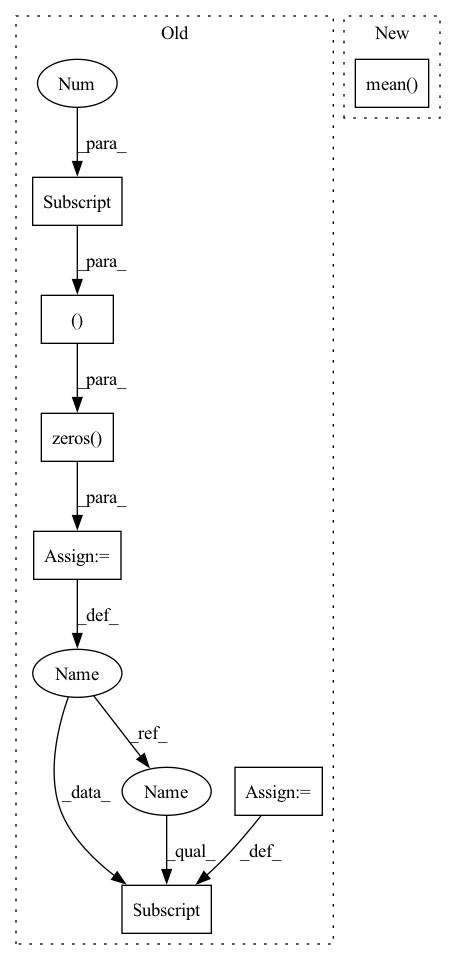

Pattern ID :34618

Before Change
def avg_pool2d(self, kernel_size=(2,2)):
chan = self.shape[1]
ww = np.zeros((chan, 1, kernel_size[0], kernel_size[1]), dtype=np.float32)
ww[range(chan), 0, :, :] = 1/(kernel_size[0]*kernel_size[1])
return self.conv2d(Tensor(ww, device=self.device, requires_grad=False), stride=kernel_size, groups=chan)
def max_pool2d(self, kernel_size=(2,2)):
After Change
return xup.reshape(shape=(xup.shape[0], xup.shape[1], xup.shape[2]//py, py, xup.shape[3]//px, px))
def avg_pool2d(self, kernel_size=(2,2)):
return self._pool2d(*kernel_size).mean(axis=(3,5))
def max_pool2d(self, kernel_size=(2,2)):
// TODO: support tuples in max
return self._pool2d(*kernel_size).max(axis=5).max(axis=3)
In pattern: SUPERPATTERN
Frequency: 3
Non-data size: 7
Instances
Fragment ID: 99438031
Project Name: geohot/tinygrad
Commit Name: f18801c7db8db9de3493ca9c79cc1171fffcd222
Time: 2020-12-29
Author: geohot@gmail.com
File Name: tinygrad/tensor.py
M Class Name: Tensor
N Class Name: Tensor
M Method Name: avg_pool2d(2)
N Method Name: avg_pool2d(2)
M Parent Class:
N Parent Class:
M File Name: tinygrad/tensor.py
N File Name: tinygrad/tensor.py
M Start Line: 250
M End Line: 253
N Start Line: 254
N End Line: 254
'>
Before Change
h = (is_valid * h).sum(dim=1) / is_valid.sum(dim=1)
assert not torch.isnan(h).any().item()
output = torch.zeros((B, h.shape[1]), dtype=h.dtype, device=h.device)
output[batch_indices] = h
assert not torch.isnan(h).any().item()
output = self.fc_output(output)
After Change
h = self.transformer_encoder(h)
h = h.permute(1, 0, 2) // OBE -> BOE
output = self.fc_output(h.mean(dim=1))
return output
'>
Fragment ID: 99438024
Project Name: wkentaro/safepicking
Commit Name: e74a5b494b0d9d2bfa1260ba9efb13937b2bd894
Time: 2021-06-11
Author: www.kentaro.wada@gmail.com
File Name: examples/target_pick/pose_net.py
M Class Name: PoseNet
N Class Name: PoseNet
M Method Name: forward(4)
N Method Name: forward(4)
M Parent Class: torch.nn.Module
N Parent Class: torch.nn.Module
M File Name: examples/target_pick/pose_net.py
N File Name: examples/target_pick/pose_net.py
M Start Line: 42
M End Line: 70
N Start Line: 40
N End Line: 48
'>
Before Change
def avg_pool2d(self, kernel_size=(2,2)):
chan = self.shape[1]
ww = np.zeros((chan, 1, kernel_size[0], kernel_size[1]), dtype=np.float32)
ww[range(chan), 0, :, :] = 1/(kernel_size[0]*kernel_size[1])
return self.conv2d(Tensor(ww, device=self.device, requires_grad=False), stride=kernel_size, groups=chan)
def max_pool2d(self, kernel_size=(2,2)):
After Change
return xup.reshape(shape=(xup.shape[0], xup.shape[1], xup.shape[2]//py, py, xup.shape[3]//px, px))
def avg_pool2d(self, kernel_size=(2,2)):
return self._pool2d(*kernel_size).mean(axis=(3,5))
def max_pool2d(self, kernel_size=(2,2)):
// TODO: support tuples in max
return self._pool2d(*kernel_size).max(axis=5).max(axis=3)
'>
Fragment ID: 99438033
Project Name: geohot/tinygrad
Commit Name: f18801c7db8db9de3493ca9c79cc1171fffcd222
Time: 2020-12-29
Author: geohot@gmail.com
File Name: tinygrad/tensor.py
M Class Name: Tensor
N Class Name: Tensor
M Method Name: avg_pool2d(2)
N Method Name: avg_pool2d(2)
M Parent Class:
N Parent Class:
M File Name: tinygrad/tensor.py
N File Name: tinygrad/tensor.py
M Start Line: 250
M End Line: 253
N Start Line: 254
N End Line: 254